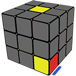

Шаг 1: Нужно собрать желтый крест на верхней грани
Первый шаг - опустить ребро вниз, чтобы оно оказалось на нижней грани. В нашем случае сделать R.
Второй шаг - совместить ребро, которое теперь находится внизу, с синим центром кубика. Выполняем D'.
Третий шаг - поднять ребро на свое место. Для этого нужно сделать F2. Теперь наше ребро на своем месте, но..
Возможная ситуация: ребро расположено «наоборот», для того, чтобы развернуть его, делаем
F U' R U
Поворачиваем кубик следующим (красным) центром к себе и собираем Желто-Красное ребро. Все аналогично. Затем Желто-Зеленое и Желто-Оранжевое.

Вы собрали несколько ребер, а следующее стоит так, что опустив его, мы нарушим верх. Комбинация: R' D' R - это то же самое, просто с возвратом правой грани на свое место.
Шаг 2: расставить углы на верхнем слое по своим местам
Начнем с Желто-Красно-Синего угла. Держим желтый центр вверху и ищем его. Первый вариант наш угол находится внизу.

Начнем с Желто-Красно-Синего угла. Держим желтый центр вверху и ищем его. Первый вариант наш угол находится внизу.
Подкрутим низ так, чтобы искомый угол стал под своим местом, как на рис. Затем делаем R' D' R D от 1 до 5 раз, пока угол не станет на свое место правильно. Далее - следующий угол.